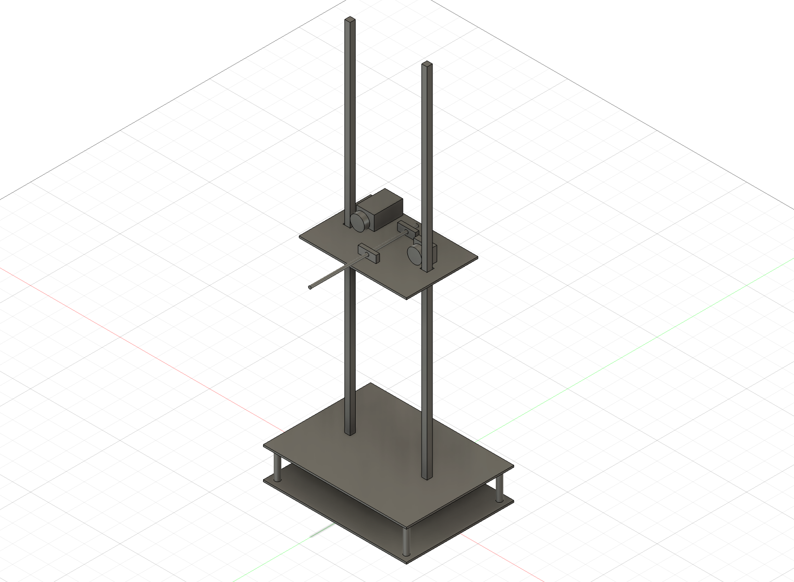
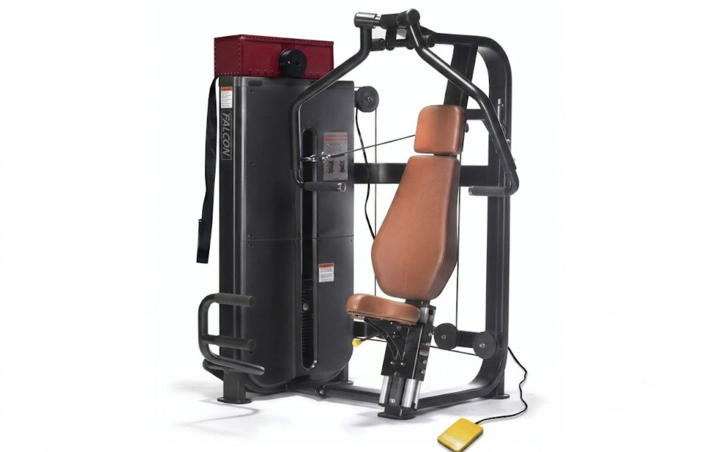
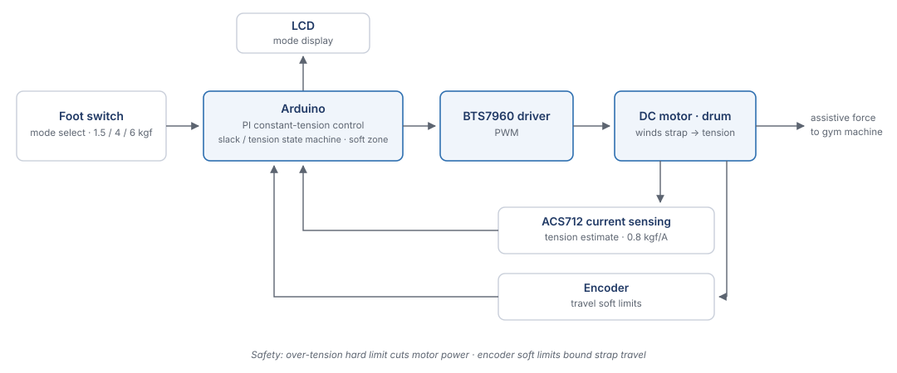

WAM: Weightlifting Assistant Machine

WAM is a clamp-on device that adds motor-driven assistive force to ordinary commercial gym machines, letting users train closer to their limit safely. Built as the final team project for the Mechatronics course at SNU. As hardware lead, I owned the mechanical design and fabrication end to end.
Motivation
Training near your limit is where strength gains happen — and where a spotter is normally required. Assist systems that solve this do exist, but they are built into a single dedicated machine: a gym has to replace equipment to get the feature. WAM takes the opposite approach — a small retrofit unit that clamps onto the machines a gym already owns and adds a controlled assistive force on demand.
Drive Mechanism — Design Pivot
The core challenge was the drive mechanism. I first approached it with a rack-and-pinion linear actuator, but it proved too heavy and couldn't secure enough stroke to attach and detach on existing machines. I switched to a drum-and-strap cable-winding system: the motor rotates a drum to wind a strap, and that tension is transmitted as assistive force — far lighter and easy to mount or remove.

Mechanical Design
I modeled the full motor-drum-strap transmission in CAD and fabricated the enclosure and mechanical assembly. To make WAM universal, I proposed an adjustable clamp mount that fits nearly any standard "plate & pin" machine — unlike competitor products built into a single machine.

System & Control
The device runs closed-loop constant-tension control on an Arduino: an ACS712 current sensor reads motor current, the firmware converts it to an estimated strap tension (0.8 kgf/A), and a PI loop drives the DC motor through a BTS7960 driver to hold the target tension. A state machine separates slack take-up from the constant-tension phase, a soft zone suppresses hunting around the setpoint, a hard limit cuts power on over-tension, and encoder-based soft limits bound the travel. A foot switch cycles three assistance modes (1.5 / 4 / 6 kgf) shown on an LCD. Control firmware and circuitry were implemented by teammates; I designed and built the mechanical system they run on.

Results
- Stable 6 kg of assistance, validated by lifting a 6 kg load on a self-made test rig.
- Three selectable assistance modes — 1.5 / 4 / 6 kgf — switched by foot while training.
- Force ceiling set by a low-cost motor chosen within the project budget, with clear headroom to scale assistance using a stronger motor.
- 특상 (4th place out of 16 teams) at the course's final project competition.
Role
Team of 5, hardware lead. Owned the drive-mechanism design and pivot, CAD modeling of the motor-drum-strap transmission, enclosure fabrication, and the adjustable clamp mount concept.